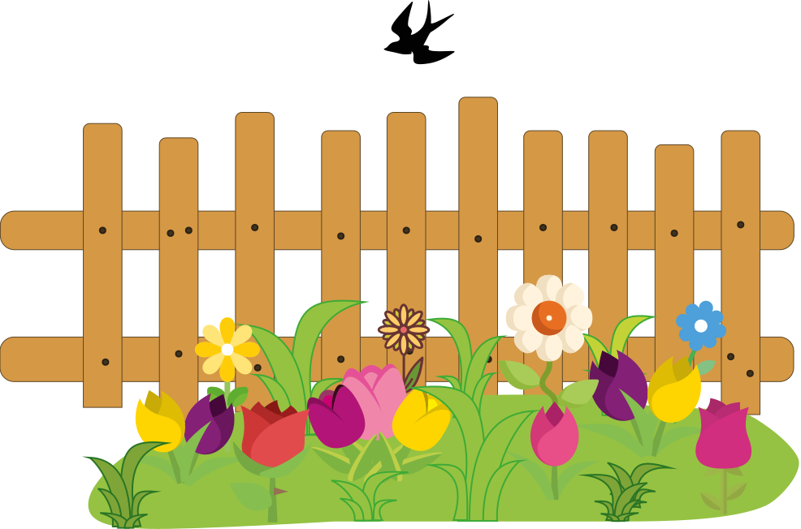

Eng
EngMiracle in the middle of the day

There were flowers in grandmother's beautiful flower bed right next to the high fence. A variety of peonies, chrysanthemums, tulips along with colorful roses and many other beauties. Well-kept, in late spring they bloomed in all colors, shimmered with the colors of the most beautiful rainbow and smelled of the fragrant aroma of multifaceted perfumes.
A swallow lived under the roof of the grandmother's house. She had already folded the nest and was busy with her own affairs. Only occasionally did she sit on the fence to exchange friendly words with flowers. And one day she noticed that the inhabitants of the flower bed became gloomy.
- Good day, blooming friends. Why gloomy? - asked the swallow.
- You will not understand us. You fly so high and so far that you can see a blue lake, a green forest, and even the tops of snowy mountains. And we only see this fence. There is nothing interesting with us, - the peonies answered not cheerfully.
- My friends, don't be upset, a magical miracle can happen even near you. I encourage you. One day I will show a real shooting star.
- A shooting star does not happen in a day, - the roses answered in surprise.
The swallow just smiled and flew on.
Only a few days have passed since that conversation and the swallow flew to the flower bed.
- Do you remember I promised you a miracle? - said the bird, - So look at the sky!
The flowers were surprised and raised their buds to look at the blue sky.
At that moment, a light summer rain fell. The sun shone very brightly and illuminated every drop with a bright ray. The droplets seemed to turn into dazzling diamonds and sapphires. They overflowed and slowly fell. It felt like a real shooting star in the middle of the day.

The flowers were very impressed:
- This is such a miracle!
- Beauty can be found anywhere. You just have to look closely.
The flowers smiled and thanked their friend.
Kharkiv, 02.27.2024